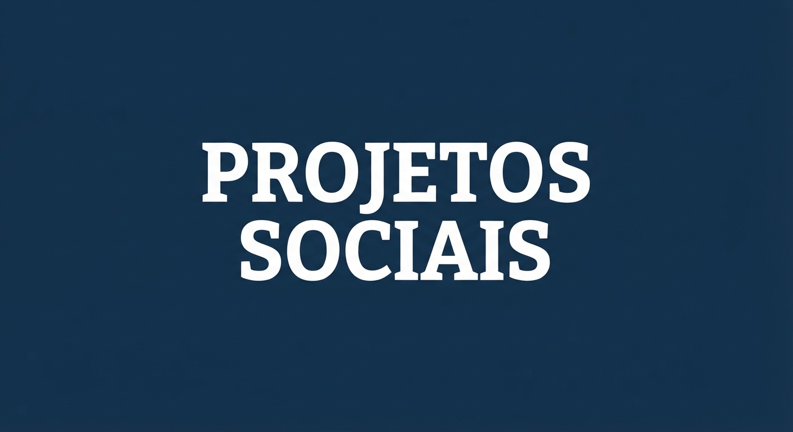
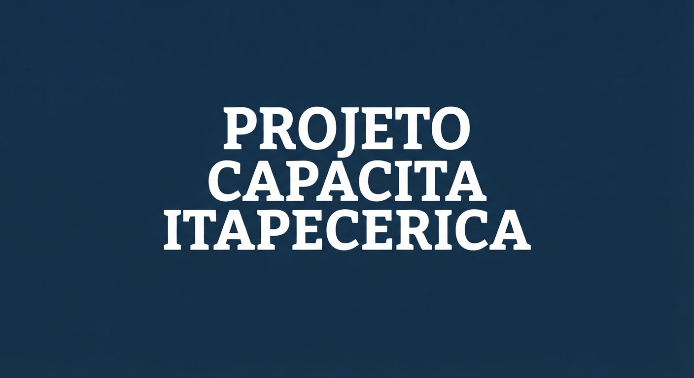
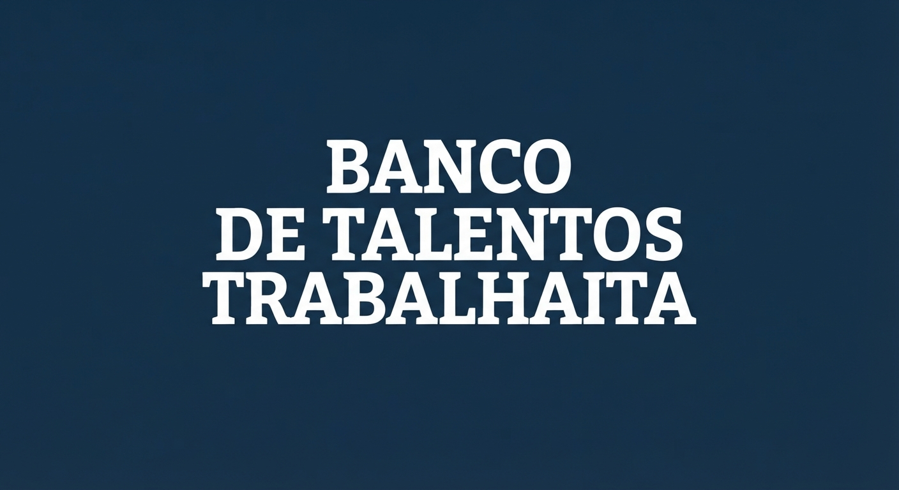
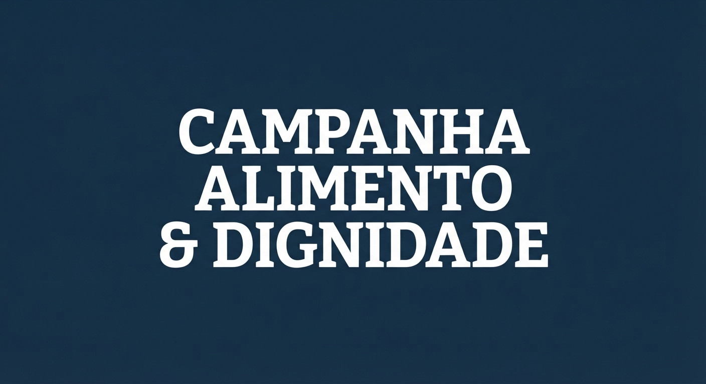

Projetos sociais
No Avança Itapecerica, transformamos metas em ações práticas.
Conheça os três principais projetos que guiam o nosso trabalho
diário na comunidade:

Projeto Capacita Itapecerica
Um programa contínuo de cursos profissionalizantes gratuitos
de curta duração, focados nas maiores demandas do comércio
e do setor de serviços da nossa região.

-
Como funciona: Oferecemos trilhas de aprendizado
presenciais e práticas nas áreas de Atendimento ao
Cliente, Rotinas Administrativas, Introdução à
Informática e Técnicas de Vendas.
-
O impacto: Prepara o cidadão para o mercado real de
trabalho, oferecendo certificado e o conhecimento
necessário para disputar vagas de emprego de igual
para igual.
Banco de Talentos TrabalhaITA
Uma ponte estratégica e gratuita entre quem quer trabalhar
e as empresas locais que precisam de mão de obra qualificada.

-
Como funciona: Cadastramos os currículos dos moradores
da cidade e dos alunos formados pelos nossos cursos.
Simultaneamente, firmamos parcerias com o comércio e
indústrias locais para receber suas vagas de emprego
e indicar os perfis mais adequados. O projeto também
realiza mutirões mensais para ajudar a montar currículos
e simular entrevistas de emprego.
-
O impacto: Aproxima moradores em busca de oportunidades
das empresas locais, facilitando o acesso a vagas de
emprego e contribuindo para a inserção profissional.
Campanha Alimento & Dignidade
Nossa iniciativa de amparo emergencial e assistência
humanitária para garantir que ninguém precise estudar ou
procurar emprego com fome.

-
Como funciona: Centralizamos a arrecadação de alimentos
não perecíveis, agasalhos e itens de higiene doados por
moradores e empresários parceiros. O diferencial do
projeto é o "Cabide Profissional", um braço da campanha
que arrecada e empresta roupas sociais adequadas para
que os candidatos cadastrados no Banco de Talentos
possam ir bem-vestidos e confiantes às suas entrevistas
de emprego.
-
O impacto: Garante a segurança alimentar e o amparo
social imediato para as famílias em situação de extrema
vulnerabilidade da zona urbana e rural de Itapecerica.